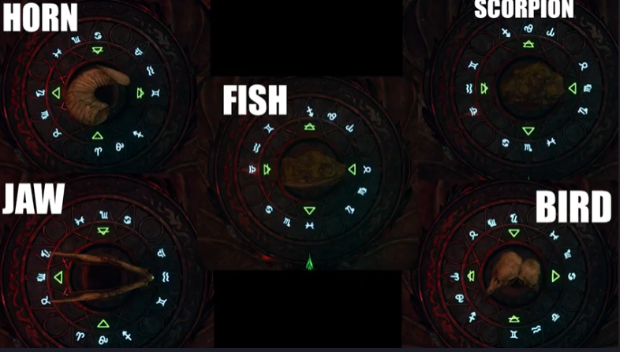

Black
Ops 6: Crafting the Elemental Swords in Citadelle des Morts
In the “Citadelle des Morts” map of Black Ops 6 Zombies, players can
craft four unique elemental swords, each with distinct abilities. These
swords are:
Caliburn: Dragon’s Fire
Durendal: Stag of the Storms
Balmung: Raven’s Shadow
Solais: Lion of Light
Below is a comprehensive guide to obtaining each sword, along with
the incantations that you need for the easter egg.
Prerequisite
Open the Pack-A-Punch
Open the door to talk to Kraftt
Pack-To-Krafft
Get to round 10 and get the stamp from the knight zombie
Go to the knight of the sword you want in the sword room
Caliburn: Dragon’s Fire
Caliburn harnesses the power of fire, delivering devastating
incendiary attacks.
Step 1: Activate Caliburn
Approach the Knight Statue: Locate the Knight
statue representing Caliburn in the Dining Room.
Use the Stamp: Interact with the statue using the
corresponding stamp to activate the sword.
Step 2: Get the Sword
Spawn: Go to left side of spawn and notice fire
bowl, hold F.
RUN!!!: Run as fast as possible back to the
knight.
Right side of spawn: Do the same on the right side
of spawn.
Near the cannon: Do the same near the cannon.
Get the sword
Step 3: Complete the
Incantation
Light the fires: Use a molotov or the fire ability
to light the three fires, kill the zombies.
Kill the fast guy that spawns.
Ankh: Put the ankh in the courtyard below where the
devil circle spawns.
Durendal: Stag of the Storms
Durendal channels the power of storms, unleashing electrical
attacks.
Step 1: Obtain
the Ritual Item - Lightning Rods
Collect the Rods: Locate three Lightning Rods
scattered across the map.
Lightning rod in basement on zombie, kill it
Next to deadshot daquiri, it’s resting near the perk
Use deadwire to shoot the electrical box in the village near Speed
Cola. It’s on an incline ramp.
Place the Rods: Insert the rods into the metal pot
on the Hillside Rampart. It’s above the courtyard on the castle
wall.
Step 2: Charge the Rods
Kill Purple-Eyed Zombies: Eliminate zombies with
glowing purple eyes with the sword. After killing 6-7 purple eyes the
sword is charged, then strike the vase with the sword. Repeat this three
times or until the three rods are charged.
Activate the Sword: Place Durendal into the pot
after the rods are fully charged to activate the sword.
Step 3: Complete the
Incantation
Collect the Horshoe: Obtain the horshoe in the barn
next to deadshot daquiri. It’s hanging above the doorway in the center.
Shoot it.
Fire out of the cannon: Fire yourself out of the
cannon and a storm should form. Pick up the horshoe that is
charged.
Confirm Completion: Come back to the spawn area and
hold F on the yellow circle that spawns.
Kill zombies: Kill zombies to fill the soulbox and
collect the incantations from the gold chest.
Balmung: Raven’s Shadow
Balmung utilizes the power of darkness, delivering shadow-infused
strikes.
Step 1: Obtain the Ritual
Item
There are five possible ritual items. No gif for this but they are
all in the purple armor room with a weapon upgrade station in the
castle:
The horn. Head height shelf right of the table.
Jaw bone. Opposite side of the same room.
Fish fossil. Near the armor in the same room near a candle on the
table its at.
Scorpion fossil. On the table in the middle of the room.
Bird heads. On the book shelf in the same room.
Step 3: Activate Balmung
Basement vault thing: Underneath the bar there
will be a vault thing, hold F to place your item. Hold F again to place
the sword. Hold F again to start moving the combination lock.
Enter the combo:

combo
Step 4: Get the Sword
Purple Portal: Purple balls will spawn around the
portal that appeared. The balls follow you. Drag the balls into the
hole.
The bar: The next portal location is at the bar.
Drag the balls into the hole.
The pool table: The next portal location is at the
pool table in the bar. Drag the balls into the whole.
Get the sword: Go back to the basement, deposit the
balls in the whole and pick up the sword.
Step 5: Complete the
Incantation
Slide in the Oubliette Room: Use the slide in the
Oubliette room next to packapunch to enter a new area.
Shoot the Raven Statue: During the slide, shoot the
raven statue to trigger its movement.
Follow and Shoot: Track the raven as it moves
across the map, shooting it each time it stops.
Collect the Talon: Once the raven stops moving,
collect the Raven’s Talon.
Soul Box: Go to the water room and place the talon
on the yellow symbol. Kill zombies. Melee the gold chest.
Take the Incantation
Solais: Lion of Light
Solais channels the power of light, offering radiant and piercing
attacks.
Step 1: Obtain
the Ritual Item - Paladin’s Brooch
Shoot the Red Crystal: Locate the red crystal above
the Vulture Aid machine in the Dining Hall and shoot it.
Follow the Red Beams: Track the beams of light
across the map.
ShootyLion
Collect the Brooch: Retrieve the Paladin’s Brooch
at the final location.
Get kills: Run to the lion grafitti and put the
brooch in the yellow portal then kill zombies until the yellow thing
disappears.
Step 2: Solve the Lion’s
Head Puzzle
Kill Glowing Parasite: Eliminate a glowing Parasite
near the lion’s head door in the Village Ascent.
Strike the Door: Hit the lion’s head door four
times to open it.
Complete the Puzzle: Solve the icon-matching puzzle
inside to activate Solais.
Step 3: The Puzzle
Place the sword in the statue in the room.
A symbol will spawn on the front, shoot the corresponding symbol in
the ceiling.
Repeat 3 more times.
Grab the sword
Step 4: Cover yourself in oil
Go back to the glowing chest
Take the light incantation
Easter Egg
The easter egg for this map is a little bit nonlinear so I’m just
going to put the order I would do things in here.
Step 1: Collect the pages
(Slender)
Go to the sitting room and collect the pages in the room. They should
be glowing if you already talked to Krafft.
Step 2: Bottle Puzzle
Mark down the six bottles and their symbols in the bar room in
spawn. They have Roman Numerals on them.
Go to the water room and melee the broken part of the wall with
melee macchiato to fully break it.
Input the symbols in order.
Step 3: Activate the Traps
in Order
Look at the puzzles from top left bottom left top right bottom right
as if you were reading a book.
Activate the traps with the corresponding glowing symbols in
order.
Kill zombies in there to complete it.
Step 4: Activate the Statues
Look at the wall in the passageway to the basement that has all the
sword symbols on it.
The symbols have a Roman Numeral next to it.
Hit Q to unleash the incantation and inspect the sword in front of
the correct knight in order.
Repeat this with all the knights until a mystical orb drops from the
sky.
Note: if the orb is in the air and doesn’t descend then you have to
jump from the balcony and hold F to pick it up.
Step 5: Activate the orb
In this step you’ll take the orb around the map to fill it with
souls.
Place the orb in the pedestal on the walls near where you filled up
the incantation of the weapons. The order doesn’t matter
Sword
Location
Fire
Middle of the courtyard on the wall
Stag
Spawn near the chest
Light
Second floor balcony in sword room
Void
Water room near the chest
Step 6: Room
Go back to the room in the passageway to the basement and unlock it
with the orb. This will trigger a cutscene and you take the key.
Step 7: Boss fight
Do the boss fight. Tier 3 drill will shred it. Definitely bring tier
3 weapons but the drill should kill him very quick.
Rat Easter Egg
For the rat easter egg you have to get cheese and scare rats by
proning near their location on the map.
Cheese
There’s a cheese shop in spawn. Break the windows and hold F to pick
up the cheese.
Locations
Spawn in a flower pot on the left side
Nature path near deadshot in the stone wall, it lookd like a tiny
cave opening
Underneath the van after buying the first door on the right
Underneath the cannon on the broken stair on the macchiato side
Underneath chairs near Juggernog on the right side
Underneath a pallet in the sword room (Dining hall)
Underneath a table in the corner of the staminup room (Sitting
room)
Behind the tablet in the magic room (Alchemical Lab)
In the water room near a pillar next to the mysterbox location
(Undercroft)
In a jail cell in the Dungeon. It should be the first cell
(Dungeon)
Fix The Cannon Easter Egg
When you fire the cannon at the door to open the castle, the cannon
breaks. This is how to fix it.
Step 1: Get the crank
The crank will fly off the handle and launch back to spawn. It will
be at the back of spawn near a box of bananas.
Step 2: Get the blowtorch
Pick up the blowtorch. It’s in the sword room, ground level in the
right back corner near a gas canister.
Step 3: Fix the Cannon
Go back to the cannon and hold F where the crank is to fix the
cannon.
100 Times
Congratulations you can now turn the cannon around to the other side
now. If you fire yourself out the cannon towards spawn 100 times you get
shot at and hit the bell tower at spawn.